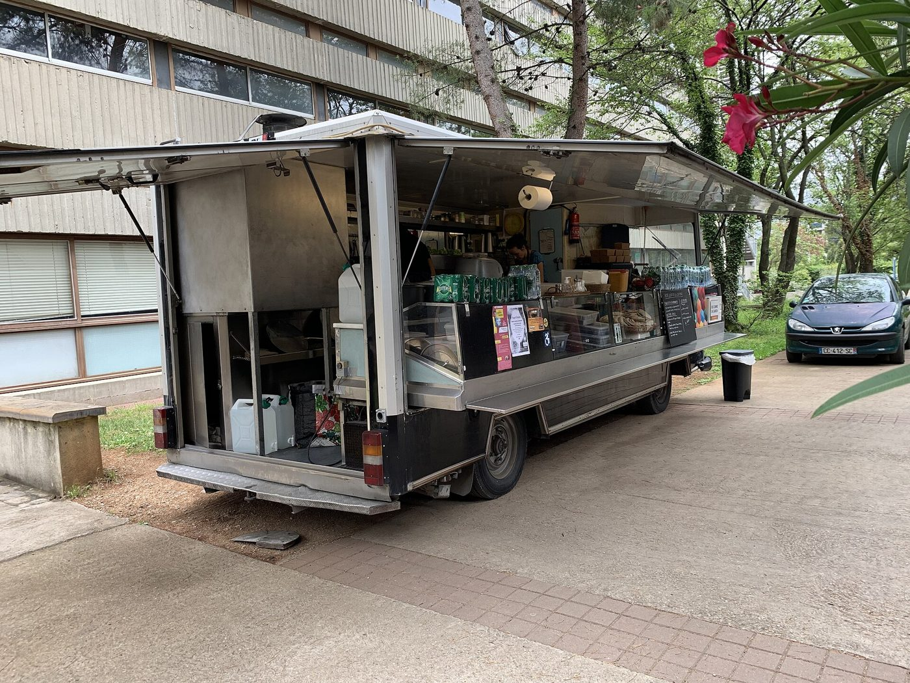
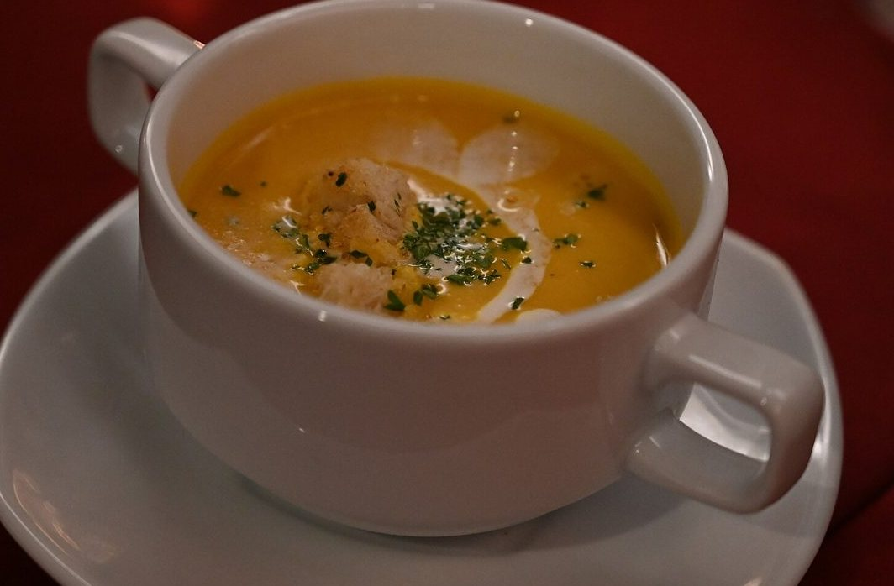
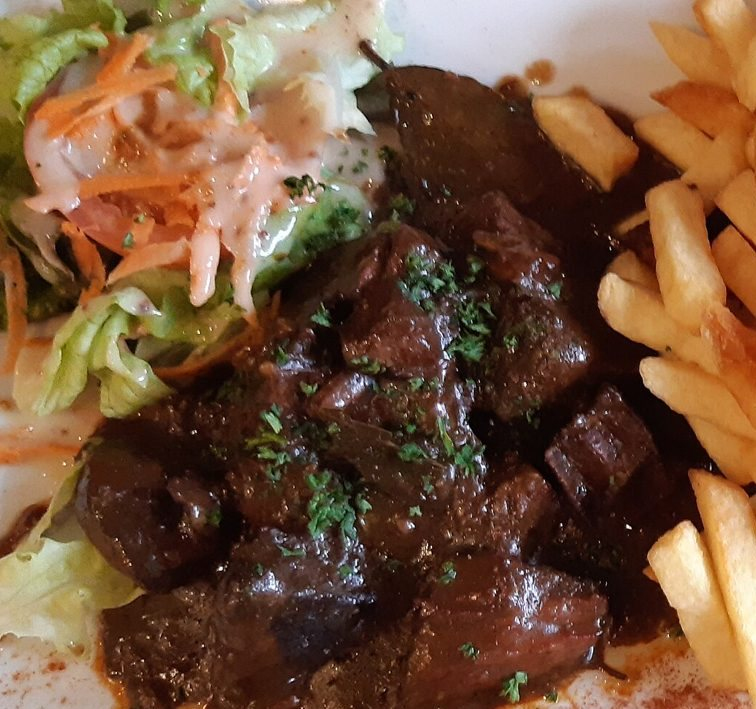
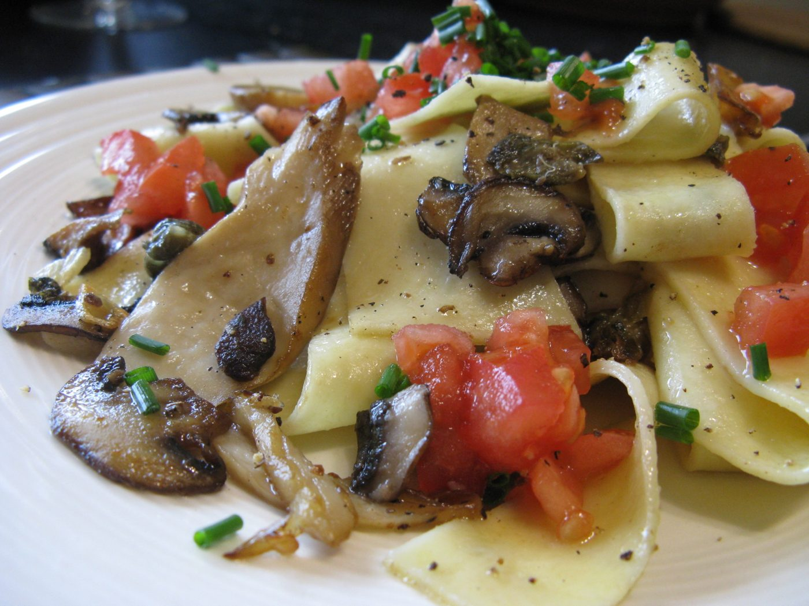

L’arrêt du jour, la carte de la semaine et votre plat mis de côté, au même endroit.

8h30–13h15 · carte de la semaine + option végétarienne
Les arrêts réguliers. Les dates d’événements privés s’affichent aussi ici.
Océane Consulting, à côté de La Poste
Marché, place des Halles
Scalian, au fond du parking
La Ruche
Marché, Décathlon
Exemple de carte : elle change chaque semaine.



Recevoir la nouvelle carte chaque lundi par SMS ou e-mail, avec l’arrêt le plus proche de chez vous.
M’inscrire